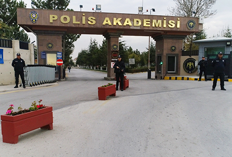
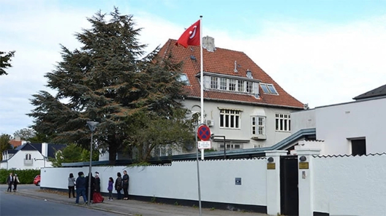
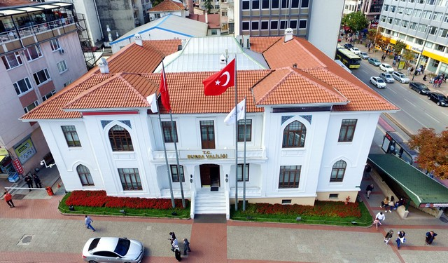
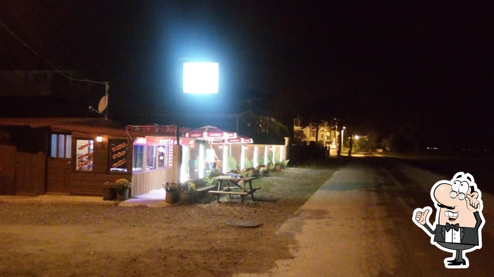

Students were used to be accepted after completing Police Colleges or completing high schools when they were 18 years old.

The population of Turkish Community in Denmark is around 70 thousand
Turkish Embassy and the Consolate serves in different buildings in the same garden

Governorship building is a historical place and is located in the center of city.
Between 2009-2012 I worked as chief of stuff at the governorship. Bursa is the 4th biggest city of Turkey with around 3 million population.One of the famous mountains for winter sports is located within the borders of Bursa, it is Uludag.
After 2018 I established a cafeteria beside the sea and I managed it with my ex-brother-in-love. It is still open and running.
It is located at the sea side.